Example Usage
1D interpolation case
Let's interpolate function $f(x)$
by values of the function in nodes $\{1, 2, 3, ..., 20\}$ (case A) and by values of the function and values of its first derivatives in the same nodes (case B). Firstly we'll build a spline using the reproducing kernel RK_H1():
A)
using NormalHermiteSplines
x = collect(1.0:1.0:20) # function nodes
u = x.*0.0 # function values in nodes
for i in 6:10
u[i] = 1.0
end
for i in 11:14
u[i] = -0.2 * i + 3.0
end # An estimation of the 'scaling parameter' the spline being built with
ε_estimation = estimate_epsilon(x, RK_H1())0.7125346243561634 # Build a differentiable spline by values of function in nodes
# (a spline built with RK_H0 kernel is a continuous function,
# a spline built with RK_H1 kernel is a continuously differentiable function,
# a spline built with RK_H2 kernel is a twice continuously differentiable function).
# Here value of the 'scaling parameter' ε is estimated in the interpolate procedure.
spline = prepare(x, RK_H1())
# A value of the 'scaling parameter' the spline was built with.
ε = get_epsilon(spline)0.7125346243561634 # An estimation of the Gram matrix condition number
cond = estimate_cond(spline)1.0e7 # Construct the spline for given 'u' values
spline = construct(spline, u)
# An estimation of the interpolation accuracy -
# number of significant digits in the function value interpolation result.
significant_digits = estimate_accuracy(spline)11 p = collect(1.0:0.2:20) # evaluation points
σ = evaluate(spline, p)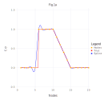
dσ = similar(p)
for i=1:length(p)
dσ[i] = evaluate_derivative(spline, p[i])
end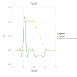
Evaluate the spline at some points:
p = [3.1, 8.1, 12.1, 18.1]
σ = evaluate(spline, p)4-element Array{Float64,1}:
0.0052338510965359575
1.0029716012496541
0.5803978696452541
0.00016170140749327544Evaluate the spline derivatives at the same evaluation points:
dσ = similar(p)
for i=1:length(p)
dσ[i] = evaluate_derivative(spline, p[i])
end
dσ4-element Array{Float64,1}:
0.05769978169907344
0.02164827655288364
-0.19742466976642703
0.001312782651927948Construct spline by different function values in nodes and evaluate new spline at the same evaluation points:
u2 = 2.0 .* u
spline = construct(spline, u2)
σ = evaluate(spline, p)4-element Array{Float64,1}:
0.010467702193071915
2.0059432024993082
1.1607957392905082
0.0003234028149865509B)
using NormalHermiteSplines
x = collect(1.0:1.0:20) # function nodes
u = x.*0.0 # function values in nodes
for i in 6:10
u[i] = 1.0
end
for i in 11:14
u[i] = -0.2 * i + 3.0
end
s = x # function first derivative nodes
v = x.*0.0 # function first derivative values
for i in 11:14
v[i] = -0.2
end
# Build a differentiable spline by values of function,
# and values of its first derivatives in nodes
# (a spline built with RK_H0 kernel is a continuous function,
# a spline built with RK_H1 kernel is a continuously differentiable function,
# a spline built with RK_H2 kernel is a twice continuously differentiable function).
# Here value of the 'scaling parameter' ε is estimated in the interpolate procedure.
spline = interpolate(x, u, s, v, RK_H1())
# A value of the 'scaling parameter' the spline was built with
ε = get_epsilon(spline)1.1092343969889604 # An estimation of the Gram matrix condition number
cond = estimate_cond(spline)1.0e7 # An estimation of the interpolation accuracy -
# number of significant digits in the function value interpolation result.
significant_digits = estimate_accuracy(spline)11 p = collect(1.0:0.2:20) # evaluation points
σ = evaluate(spline, p)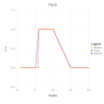
dσ = similar(p)
for i=1:length(p)
dσ[i] = evaluate_derivative(spline, p[i])
end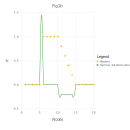
Evaluate the spline at some points:
p = [3.1, 8.1, 12.1, 18.1]
σ = evaluate(spline, p)4-element Array{Float64,1}:
-2.6929569685307797e-12
0.9999999960755872
0.5799999979736015
-7.958078640513122e-13Evaluate the spline derivatives at the same evaluation points:
dσ = similar(p)
for i=1:length(p)
dσ[i] = evaluate_derivative(spline, p[i])
end
dσ4-element Array{Float64,1}:
7.359726863030933e-13
-6.96910128202657e-8
-0.20000003580244952
5.179482573830204e-13C)
Now let's interpolate function $f(x)$ using a spline built with reproducing kernel RK_H0:
using NormalHermiteSplines
x = collect(1.0:1.0:20) # function nodes
u = x.*0.0 # function values in nodes
for i in 6:10
u[i] = 1.0
end
for i in 11:14
u[i] = -0.2 * i + 3.0
end
# Build a continuous spline by values of function in nodes
# Here value of the 'scaling parameter' ε is estimated in the interpolate procedure.
spline = interpolate(x, u, RK_H0())
# A value of the 'scaling parameter' the spline was built with
ε = get_epsilon(spline)0.47502308290410894 # An estimation of the Gram matrix condition number
cond = estimate_cond(spline)10000.0 # An estimation of the interpolation accuracy -
# number of significant digits in the function value interpolation result.
significant_digits = estimate_accuracy(spline)14 p = collect(1.0:0.2:20) # evaluation points
σ = evaluate(spline, p)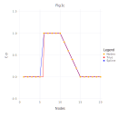
Evaluate the spline at some points:
p = [3.1, 8.1, 12.1, 18.1]
σ = evaluate(spline, p)4-element Array{Float64,1}:
6.440671765606792e-16
0.9999718738633189
0.5799851868686933
-1.6040090514390337e-15This spline is an infinitely differentiable function everywhere excepting the spline nodes. Its derivative does not exist at spline nodes but we can differentiate the spline at other points. Let's evaluate the spline derivatives at the same evaluation points (which do not coincide with the spline nodes):
dσ = similar(p)
for i=1:length(p)
dσ[i] = evaluate_derivative(spline, p[i])
end
dσ4-element Array{Float64,1}:
-9.25784489538675e-16
-0.0002500089317770085
-0.20012979651612292
5.002424122414834e-152D interpolation case
Let's interpolate function $\phi (x,y) = \frac{2}{3}cos(10x)sin(10y) + \frac{1}{3}sin(10xy)$ defined on unit square $\Omega = [0,1]^2$.
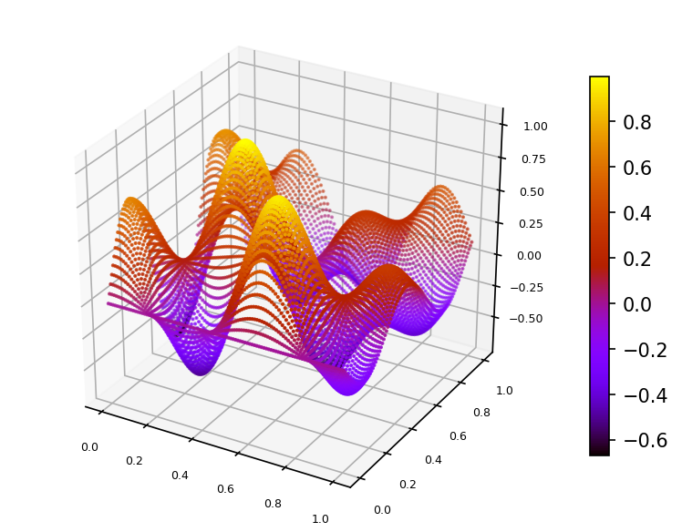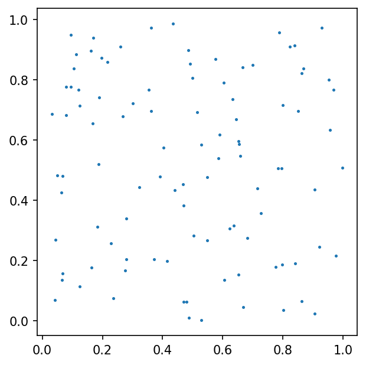We built a spline using function $\phi$ values sampled on set of 100 pseudo-random nodes uniformly distributed on $\Omega$ (case A).
Spline plot Approximation error plots
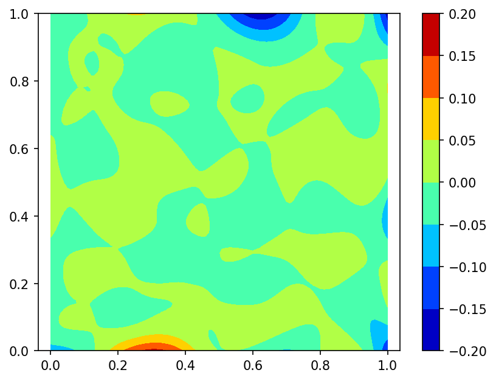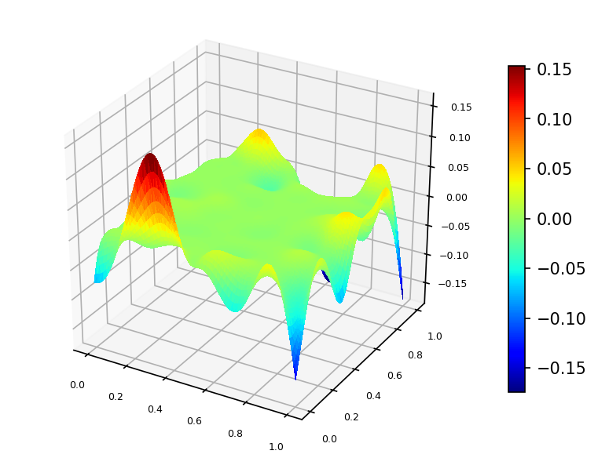and
using function $\phi$ values sampled on set of 100 pseudo-random nodes uniformly distributed on $\Omega$ and 80 function $\phi$ gradient values defined at nodes located on the border of domain $\Omega$ (case B):
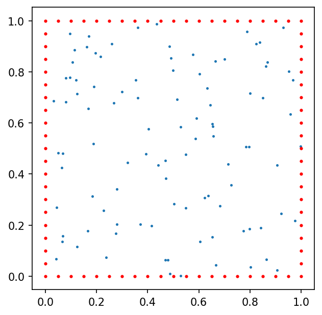here red dots represent the function $\phi$ gradient nodes.
Spline plot Approximation error plots
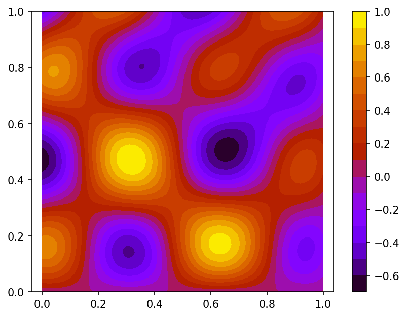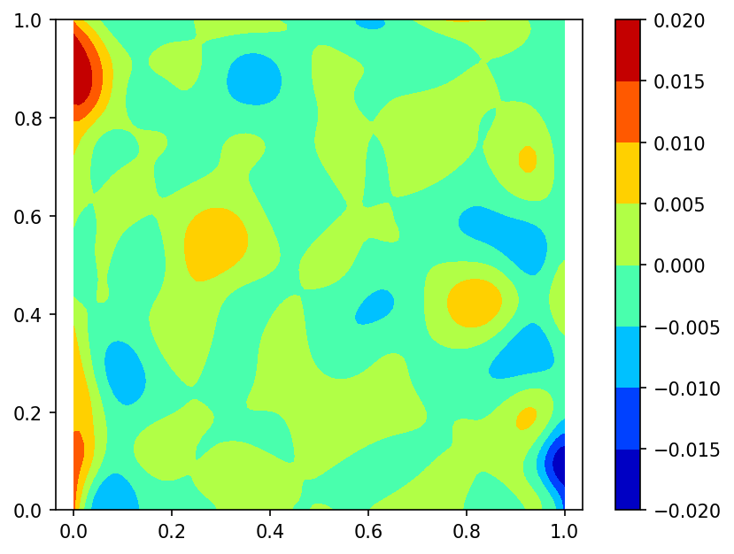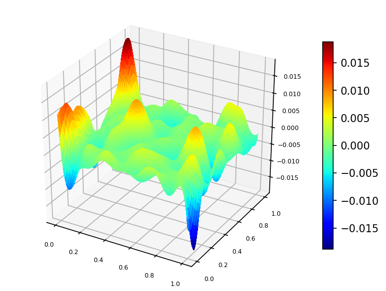Following is the code example for case A:
using Random
using NormalHermiteSplines
# generating 100 uniform random nodes
m = 100
nodes = Matrix{Float64}(undef, 2, m)
rng = MersenneTwister(0);
rnd = rand(rng, Float64, (2, m))
for i = 1:m
nodes[1, i] = rnd[1, i]
nodes[2, i] = rnd[2, i]
end
u = Vector{Float64}(undef, m) # function values at nodes
for i = 1:m
x = nodes[1,i]
y = nodes[2,i]
u[i] = (2.0*cos(10.0*x)*sin(10.0*y) + sin(10.0*x*y))/3.0
end
# creating the uniform Cartesian grid of size 101x101 on [0, 1]x[0, 1]
t = 100
x = collect(range(0.0, 1.0; step = 1.0/t))
y = collect(range(0.0, 1.0; step = 1.0/t))
t1 = t + 1
n = t1^2
grid = Matrix{Float64}(undef, 2, n)
for i = 1:t1
for j = 1:t1
r = (i - 1) * t1 + j
grid[1, r] = x[i]
grid[2, r] = y[j]
end
end
f = Vector{Float64}(undef, n)
for i = 1:n
x = grid[1,i]
y = grid[2,i]
f[i] = (2.0*cos(10.0*x)*sin(10.0*y) + sin(10.0*x*y))/3.0
end
# Here spline is constructed with RK_H2 kernel,
# the value of the 'scaling parameter' ε is estimated
# in the interpolate procedure.
rk = RK_H2()
spline = interpolate(nodes, u, rk)
#
# A value of the 'scaling parameter' the spline was built with
ε = get_epsilon(spline)3.484398902180334 # An estimation of the Gram matrix condition number
cond = estimate_cond(spline)1.0e10 # An estimation of the interpolation accuracy -
# number of significant digits in the function value interpolation result.
significant_digits = estimate_accuracy(spline)11 σ = evaluate(spline, grid)
# Return the Root Mean Square Error (RMSE) of interpolation
rmse = sqrt(sum((f .- σ).^2)) / sqrt(length(f))0.02209299026677182 # Return the Maximum Absolute Error (MAE) of interpolation
mae = maximum(abs.(f .- σ))0.1793905250815256Value of function $\phi$ at evaluation point $p = [0.5; 0.5]$
p = [0.5; 0.5]
x = p[1]
y = p[2]
f = (2.0*cos(10.0*x)*sin(10.0*y) + sin(10.0*x*y))/3.00.018150344404862222Value of spline at the evaluation point:
σ = evaluate_one(spline, p)0.017166894615186834Difference of function $\phi$ and spline values at the evaluation point:
diff = f - σ0.0009834497896753884Gradient of function $\phi$ at the evaluation point
g1 = (10.0*y*cos(10.0*x*y) - 20.0*sin(10.0*x)*sin(10.0*y))/3.0
g2 = (20.0*cos(10.0*x)*cos(10.0*y) + 10.0*x*cos(10.0*x*y))/3.0
f_grad = [g1; g2]2-element Array{Float64,1}:
-7.465477789499732
-0.7988111228330643Gradient of spline at the evaluation point
σ_grad = evaluate_gradient(spline, p)2-element Array{Float64,1}:
-7.481568288519697
-0.8051369242781837Norm of difference of function $\phi$ and spline gradient values at the evaluation point:
diff_grad = sqrt(sum((f_grad .- σ_grad).^2))0.017289300813930316Corresponding code example for case B:
using Random
using NormalHermiteSplines
function get_2D_border_nodes(m::Int)
mat0 = [0.0 0.0; 0.0 1.0; 1.0 0.0; 1.0 1.0]'
if m < 1
return mat0
end
m1 = m + 1
p = collect(range(1.0/m1, (1.0 - 1.0/m1); step = 1.0/m1))
ms = m * 4
mat = Matrix{Float64}(undef, 2, ms)
for i = 1:m
mat[1,i] = 0.0
mat[2,i] = p[i]
end
for i = (m+1):(2*m)
mat[1,i] = 1.0
mat[2,i] = p[i-m]
end
for i = (2*m+1):(3*m)
mat[1,i] = p[i-2*m]
mat[2,i] = 0.0
end
for i = (3*m+1):(4*m)
mat[1,i] = p[i-3*m]
mat[2,i] = 1.0
end
w = hcat(mat0, mat)
return w
end
# generating 100 uniform random nodes
m = 100
nodes = Matrix{Float64}(undef, 2, m)
rng = MersenneTwister(0);
rnd = rand(rng, Float64, (2, m))
for i = 1:m
nodes[1, i] = rnd[1, i]
nodes[2, i] = rnd[2, i]
end
u = Vector{Float64}(undef, m) # function values at nodes
for i = 1:m
x = nodes[1,i]
y = nodes[2,i]
u[i] = (2.0*cos(10.0*x)*sin(10.0*y) + sin(10.0*x*y))/3.0
end
bnodes = get_2D_border_nodes(19) # 80 border nodes
bn_1 = size(bnodes, 2)
d_nodes = Matrix{Float64}(undef, 2, bn_1)
es = Matrix{Float64}(undef, 2, bn_1)
du = Vector{Float64}(undef, bn_1)
grad = [0.0; 0.0]
for i = 1:bn_1
x = bnodes[1,i]
y = bnodes[2,i]
d_nodes[1,i] = x
d_nodes[2,i] = y
grad[1] = (10.0*y*cos(10.0*x*y) - 20.0*sin(10.0*x)*sin(10.0*y))/3.0
grad[2] = (20.0*cos(10.0*x)*cos(10.0*y) + 10.0*x*cos(10.0*x*y))/3.0
es[1,i] = grad[1] # no need to normalize 'es' vectors
es[2,i] = grad[2]
du[i] = sqrt(grad[1]^2 + grad[2]^2)
end
# creating the uniform Cartesian grid of size 101x101 on [0, 1]x[0, 1]
t = 100
x = collect(range(0.0, 1.0; step = 1.0/t))
y = collect(range(0.0, 1.0; step = 1.0/t))
t1 = t + 1
n = t1^2
grid = Matrix{Float64}(undef, 2, n)
for i = 1:t1
for j = 1:t1
r = (i - 1) * t1 + j
grid[1, r] = x[i]
grid[2, r] = y[j]
end
end
f = Vector{Float64}(undef, n)
for i = 1:n
x = grid[1,i]
y = grid[2,i]
f[i] = (2.0*cos(10.0*x)*sin(10.0*y) + sin(10.0*x*y))/3.0
end
# Here spline is constructed with RK_H2 kernel,
# the 'scaling parameter' ε is defined explicitly.
rk = RK_H2(1.0)
spline = interpolate(nodes, u, d_nodes, es, du, rk)
#
# A value of the 'scaling parameter' the spline was built with
ε = get_epsilon(spline)1.0 # An estimation of the Gram matrix condition number
cond = estimate_cond(spline)1.0e13 # An estimation of the interpolation accuracy -
# number of significant digits in the function value interpolation result.
significant_digits = estimate_accuracy(spline)9 σ = evaluate(spline, grid)
# Return the Root Mean Square Error (RMSE) of interpolation
rmse = sqrt(sum((f .- σ).^2)) / sqrt(length(f))0.003331586690934814 # Return the Maximum Absolute Error (MAE) of interpolation
mae = maximum(abs.(f .- σ))0.019130809163022677Value of function $\phi$ at evaluation point $p = [0.5; 0.5]$
p = [0.5; 0.5]
x = p[1]
y = p[2]
f = (2.0*cos(10.0*x)*sin(10.0*y) + sin(10.0*x*y))/3.00.018150344404862222Value of spline at the evaluation point:
σ = evaluate_one(spline, p)0.017335270230546485Difference of function $\phi$ and spline values at the evaluation point:
diff = f - σ0.0008150741743157379Gradient of function $\phi$ at the evaluation point
g1 = (10.0*y*cos(10.0*x*y) - 20.0*sin(10.0*x)*sin(10.0*y))/3.0
g2 = (20.0*cos(10.0*x)*cos(10.0*y) + 10.0*x*cos(10.0*x*y))/3.0
f_grad = [g1; g2]2-element Array{Float64,1}:
-7.465477789499732
-0.7988111228330643Gradient of spline at the evaluation point
σ_grad = evaluate_gradient(spline, p)2-element Array{Float64,1}:
-7.48378138184944
-0.7997070267590516Norm of difference of function $\phi$ and spline gradient values at the evaluation point:
diff_grad = sqrt(sum((f_grad .- σ_grad).^2))0.018325505088506264Q & A
Q1. Question: The call
spline = interpolate(x, u, RK_H2())cause the following error: PosDefException: matrix is not positive definite; Cholesky factorization failed. What is a reason of the error and how to resolve it?
A1. Answer: Creating a Bessel potential space reproducing kernel object with omitted scaling parameter ε means that this parameter will be estimated during interpolating procedure execution. It might happen that estimated value of the ε is too small and corresponding Gram matrix of the system of linear equations which defines the normal spline coefficients is a very ill-conditioned one and it lost its positive definiteness property because of floating-point rounding errors.
There are two ways to fix it.
- We can get the estimated value of the parameter
εby callingget_epsilonfunction:
ε = get_epsilon(spline)then we can call the interpolate function with a larger value of this parameter:
larger_ε = 5.0*ε
spline = interpolate(x, u, RK_H2(larger_ε))- We may change the precision of floating point calculations. Namely, it is possible to use Julia standard BigFloat numbers or Double64 - extended precision float type from the package DoubleFloats:
using DoubleFloats
x = Double64.(x)
u = Double64.(u)
ε = Double64(1.0)
spline = interpolate(x, u, RK_H2(ε))This answer also applies to reproducing kernel object of type RK_H0 or RK_H1.
Q2. Question: The following calls
spline = interpolate(x, u, RK_H2())
σ = evaluate(spline, p)produce the output which is not quite satisfactoty. Is it possible to improve the quality of interpolation?
A2. Answer: Creating a Bessel potential space reproducing kernel object with omitted scaling parameter ε means that this parameter will be estimated during interpolating procedure execution. It might happen that estimated value of the ε is too large and it is possible to use a smaller value of ε which can lead to a better quality of interpolation.
- We can get the value of scaling parameter
εby callingget_epsilonfunction
ε = get_epsilon(spline)and get an estimation of the problem's Gram matrix condition number by calling estimate_cond function as well as an estimation of the number of the significant digits in the interpolation result by calling estimate_accuracy function:
cond = estimate_cond(spline)
significant_digits = estimate_accuracy(spline)In a case when estimated number of the significant digits is bigger than 10 and estimated condition number is not very large, i.e. it is less than $10^{12}$, we may attempt to build a better interpolating spline by calling interpolate function with a smaller value of the scaling parameter:
e_smaller = ε/2.0
spline = interpolate(x, u, RK_H2(e_smaller))
cond = estimate_cond(spline)
significant_digits = estimate_accuracy(spline)
σ = evaluate(spline, p)Taking into account new cond and significant_digits values we decide of making further correction of the scaling parameter.
For further information, see Selecting a good value of the scaling parameter.